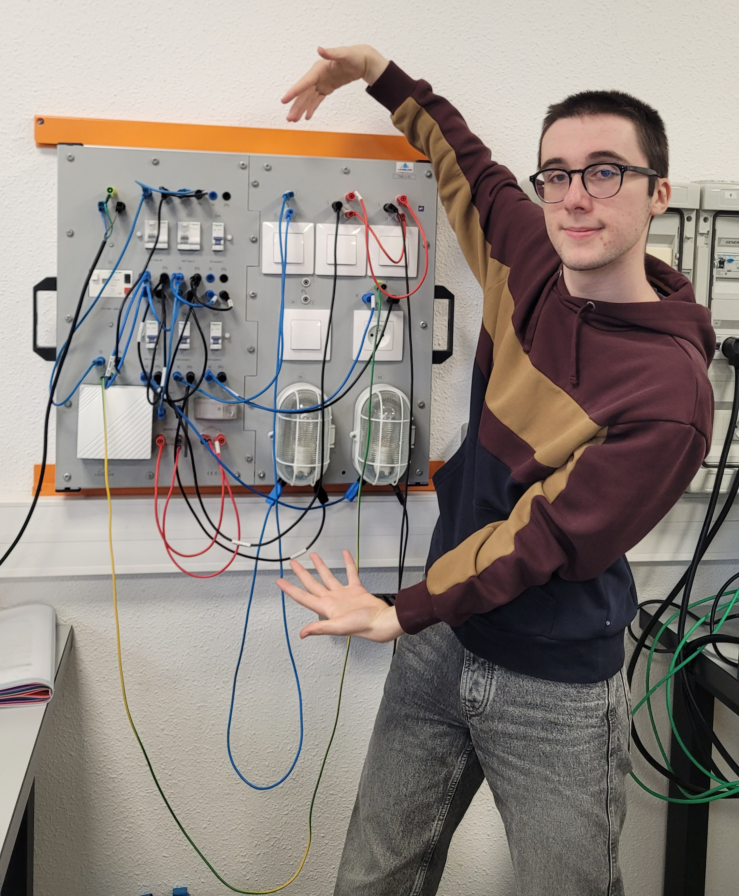

Bonjour, je suis
MAURY Martin
Étudiant en BUT Génie Électrique et Informatique Industrielle
Passionné par l'électronique, l'automatisme et l'informatique industrielle, je suis actuellement en première année de BUT GEII à l'IUT de Gradignan. Titulaire d'un Baccalauréat avec les spécialités Physique et AMC, je cherche à approfondir mes compétences techniques dans un environnement stimulant.

Objectif
Mon objectif est de développer une expertise solide en génie électrique et informatique industrielle, en combinant rigueur technique et curiosité. Je suis particulièrement attiré par les projets alliant électronique embarquée et programmation.
Curieux et motivé, je m'investis pleinement dans chaque apprentissage. Mon projet à horizon 2027 est d'effectuer un stage au Japon, une expérience qui me permettra de découvrir un environnement industriel et technologique d'excellence, ainsi que de nouvelles cultures et paysages.
Mon Parcours
Baccalauréat
Lycée Tyrosse Sud des Landes
Spécialités Physique-Chimie et AMC
BUT Génie Électrique et Informatique Industrielle
IUT de Gradignan
Formation en électronique, automatismes et programmation industrielle
Stage au Japon
À venir
Découverte d'un environnement industriel et technologique d'excellence